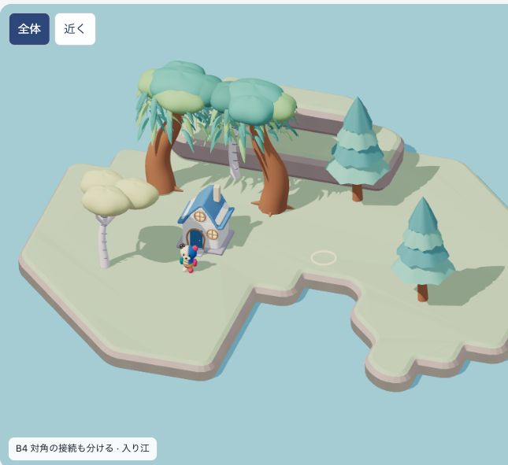
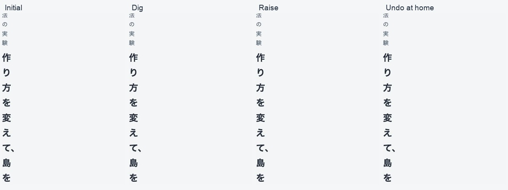

2026.10.22 · 同じ家1軒・木6本・地形入力で実試行
7案を動かして、
どこまで届いたか。
曲線の岸と、編集に対応する境界処理は前進。
ただし、目標の「入って遊びたい場所」にはまだ届いていません。
今の判断：B4は境界処理の継続候補。完成美術は全案保留。岸の断面だけでは、家・木陰・水辺のまとまりを作れません。次に必要なのは、これらの関係から地形と居場所を構成する試作です。
実際に切り替えて、掘る・歩く・戻すを試す → 結果と検証範囲
目標との距離
 到達方向。全島の物量を小さな試作へ求める比較ではありません。
到達方向。全島の物量を小さな試作へ求める比較ではありません。
B4の実画面。岸の整合は改善していますが、地面は広く平らで、配置が散在しています。同じ条件で作り方を比べる
連続地表3案と、岸・段部品4案。7個の独立したアルゴリズムではありません。390×844 CSS幅の実画面。
見つけた失敗と修正
- 背後の段が柳の根にかかる → 全案共通の初期地形を修正。簡単な円形判定と実モデルの接地を区別。
- 広い平滑化で細い陸が痩せる → A3の木の支持不成立を記録。その条件を除外しない。
- 固定の対角分割で筋状の陸になる → B4で曖昧な対角の判定を変更。実三角形上でも不要な接続が消えることを確認。
- 帰宅の最初のフレームで位置が壊れる → 重複する経路点と時刻差を修正し、全案で往復を再検査。
同じ島を編集して、復元する

盛土は小さな孤立地も作れます。見た目を整えるために編集を自動でつなげたり、所有物を移動したりしていません。
結果を分けて読む
初期表示は390幅42条件・768幅21条件。7案とも、入り江での掘削・盛土・短い水辺往復・Undo/Redoを確認しました。歩行は固定の短い旅程で、全地形の到達保証ではありません。
細い陸は元から木が経路を塞ぐため、家からの旅程は全案で通行不能でした。別の幾何診断で木の障害を除くと、A2/B1〜B4は切断前に通れ、切断後に通れなくなりました。この二つを混同しません。
未確認：任意地形の接合保証、本体保存・成長との統合、実機性能、子どもの無説明理解・再訪。美術合格や公開の判定ではありません。